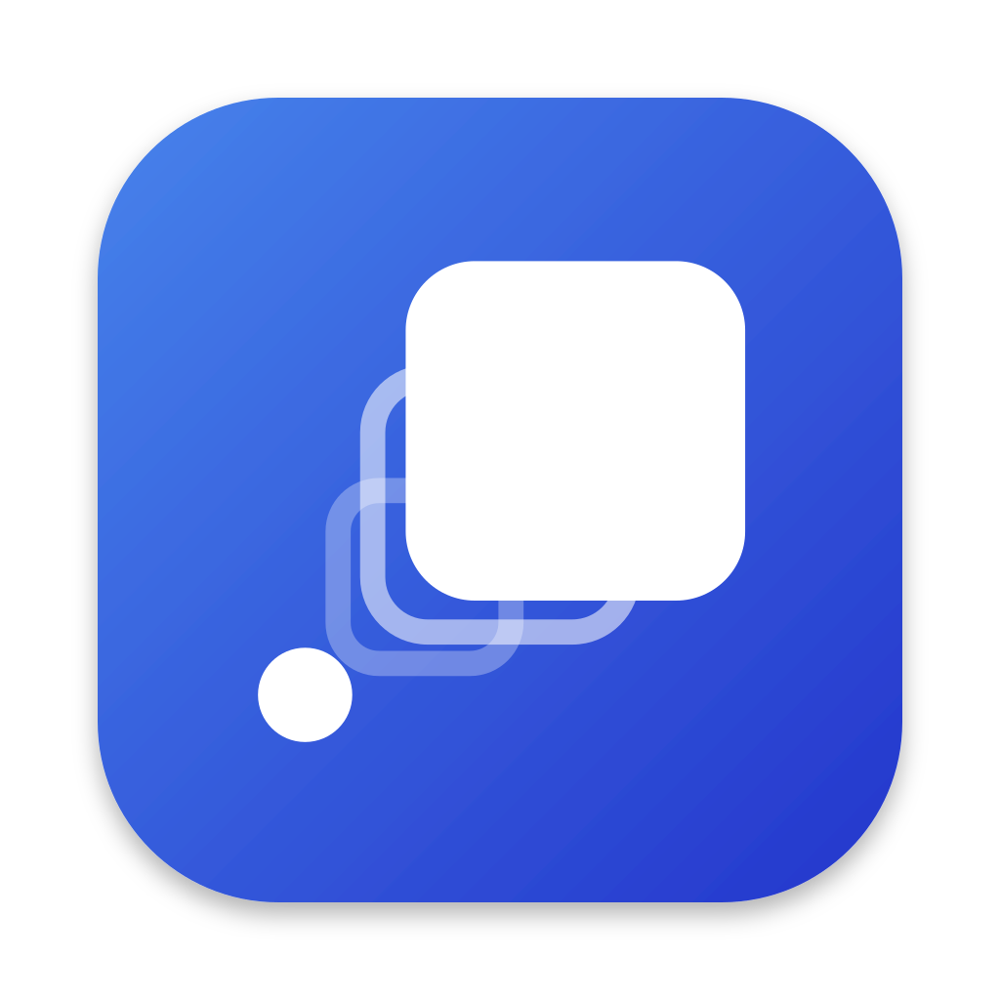
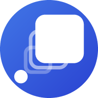

Brand
The little page that grows.
The Little Browser logo, word mark and colours, and how to use them. Click a colour swatch to copy its value.
Grow
- The dot is where you Shift+clicked a link.
- The fading outlines are the Peek card opening, the way it does in the app.
- The white card is the little page: open just for a moment, easy to let go.
Icon
At every size
At 32 px and below the icon uses a redrawn version: one heavier outline and a bigger dot.
On each platform


Word mark
little browser
Hand-drawn in lowercase with a single, even stroke. Always use the artwork, never retype it in a font.
Colour
Little Blue, and calm neutrals
The app icon is always Little Blue. Inside the app, each space tints the sidebar with its own hue. Hue 222 is the default.
Brand
Interface · light
Interface · dark
Incognito
Space hues · the sidebar and the Start tab follow the space (switch theme above to compare)
StartA tab
Little Blue · hue 222 · Default
StartA tab
Violet · hue 268
StartA tab
Rose · hue 330
StartA tab
Amber · hue 24
StartA tab
Green · hue 150
StartA tab
Teal · hue 190
Usage
Keep it calm
Do
- Use the tile icon on light or dark neutrals.
- Leave clear space of at least ¼ of the icon's width on every side.
- Use the small icon at 32 px and below. Never go smaller than 16 px.
- Set the word mark in Ink on light backgrounds and in white on dark ones.
Don't
- Rearrange, rotate or recolour the card, dot or outlines.
- Put the bare mark on a busy photo. Use the tile instead.
- Retype, stretch or capitalise the word mark, or add effects to it.
- Use the name or logo for a fork. The MPL licence doesn't cover them.